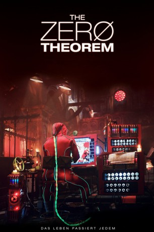
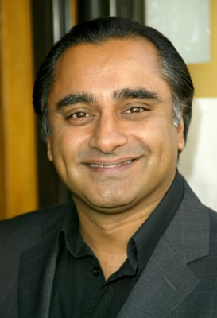

#7740 The Zero Theorem
 
 IMDB-Wertung: 6.1 / 10
IMDB-Wertung: 6.1 / 10  Metascore: 0
Metascore: 0 
Leth Qohen ist zwar ein wahrhaftiges Computer-Genie, jedoch lebt er komplett zurückgezogen und einsam in der ausgebrannten Ruine einer alten Kapelle. In seiner Welt sind die sogenannten „Mancams“ die Augen und Ohren für die schattenhafte und sagenumwobene Figur des „Management“. Leth hat sich bewusst dazu entschieden, ein Einsiedlerleben zu führen, um an einem geheimen Projekt zu arbeiten, welches das Ziel hat, den Sinn der menschlichen Existenz zu erforschen oder dessen Abstinenz. Seine Zurückgezogenheit wird nur sporadisch von Besuchen einer Dame namens Bainsley unterbrochen, mit welcher er darauf meist virtuellen Sex hat, und von dem jungen Bob, der ihm bei seinem Projekt und der Lösung daran unterstützt. Bob hat einen speziellen Anzug entwickelt, mit dessen Hilfe Leth in sein eigenes Ich blicken kann. Gepaart mit seinem Talent für Technologie ist der Wissenschaftler somit in der Lage, seine eigene Seele zu untersuchen und zu dokumentieren.
Jahr: 2013
Dauer: 106 Minuten
FSK: 12
Land: England Studio: Concorde FilmverleihTonspuren: DTS - ,
Untertitel: Deutsch,
Auflösung: 1080p (1920x1040) Größe: 8775 MB
Genre: Drama, Sci-Fi, Komödie, Fantasy, Mystery
Regisseur:  Terry Gilliam
Terry Gilliam
Drehbuch: Pat Rushin
Soundtrack: George Fenton
Darsteller:
 Christoph Waltz als Qohen Leth
Christoph Waltz als Qohen Leth Gwendoline Christie als Woman in a Street Commercial
Gwendoline Christie als Woman in a Street Commercial Rupert Friend als Man in Street Commercial
Rupert Friend als Man in Street Commercial- Lily Cole als Woman in Street Commercial
 David Thewlis als Joby
David Thewlis als Joby-  Sanjeev Bhaskar als Doctor
 Peter Stormare als Doctor
Peter Stormare als Doctor Ben Whishaw als Doctor
Ben Whishaw als Doctor- Mélanie Thierry als Bainsley
 Matt Damon als Management
Matt Damon als Management Lucas Hedges als Bob
Lucas Hedges als Bob Tilda Swinton als Dr. Shrink-Rom
Tilda Swinton als Dr. Shrink-Rom Emil Hostina als Slim Clone
Emil Hostina als Slim Clone- Dana Rogoz als Pizza Girl
 Rudy Rosenfeld als Old Homeless Man
Rudy Rosenfeld als Old Homeless Man Alan O'Silva als Man on the Street
Alan O'Silva als Man on the Street- Tudor Istodor als Man on the Street
- Ioana Blaj als Lady Shopper
- Olivia Nita als Lady Shopper
- Pavel Ulici als Party Man
- Radu Iacoban als Party Man
- Radu Andrei Micu als Sex Shop Owner
- Rodica Negrea als Nun
- George Remes als Park Policeman
- Ingrid Bisu als Work Colleague (uncredited)
- Pat Rushin als Extra (uncredited)
- Ray Cooper als Man in Street Commercial
- Margarita Doyle als Mancom Computerised Lips
- Pavlic Nemes als Chubs Clone
- Dan Astileanu als Policeman
- Gabriel Rauta als Jolly Man
- Elias Ferchin Musuret als Man on the Street
- Mihai Stanescu als Man on the Street
- Vlad Logican als Man on the Street
- Alexandra Buza als Lady Shopper
- Andreea Stefanin als Lady Shopper
- Aylin Paicu als Lady Shopper
- Cici Caraman als Lady Shopper
- Marioara Voinescu Sterian als Lady Shopper
- Theodor Costache als Mancom Guide
- Adrian Nicolae als Mancom Employee
- Andrei Hutuleac als Mancom Employee
- Ioana Barbu als Mancom Employee
- Serban Gomoi als Mancom Employee
- Ioan Cortea als Mancom Technician
- Gabriel Costin als Mancom Technician
- Ana Maria Revnic als Party Girl
- Iulia Verdes als Party Girl
- Madison Lygo als Bonnie
- Naomi Everson als Lacy
Datei: X:\2013(N-Z)\Zero Theorem, The (2013, FSK12, 1920x1040).mkv seit 15.12.2017
Festplatte: HD 2013(I-Z)-2014(A-Z)
 Es gibt insgesamt 133 Filme in der Gruppe '2013(N-Z)'
Es gibt insgesamt 133 Filme in der Gruppe '2013(N-Z)'